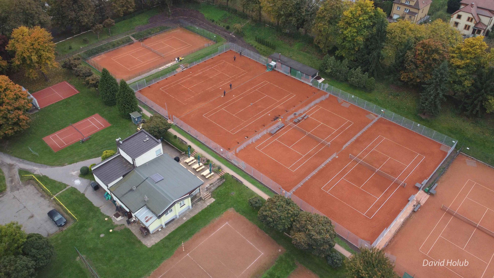
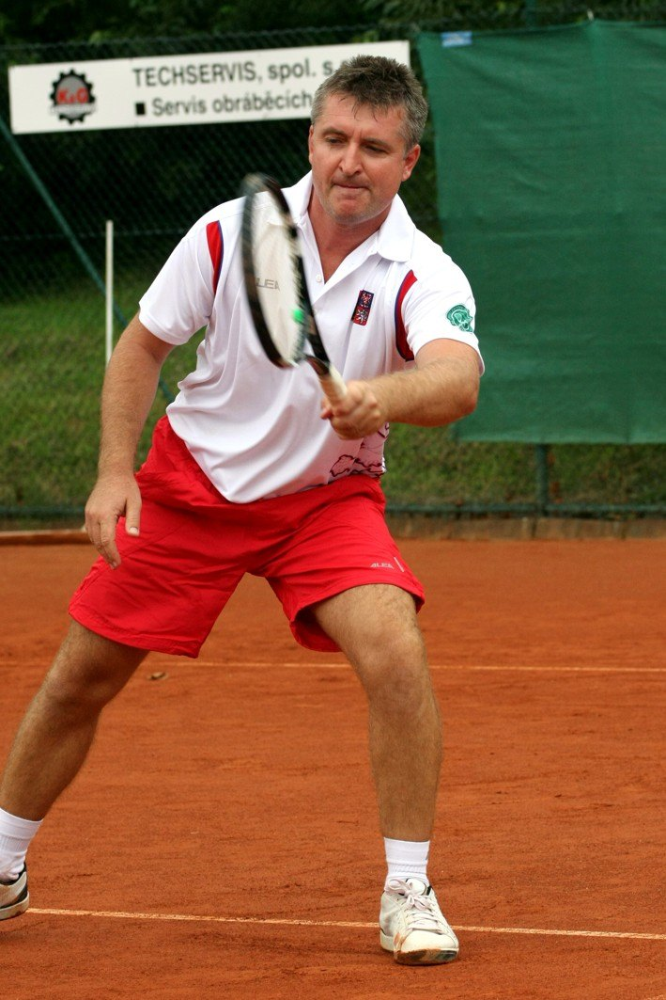
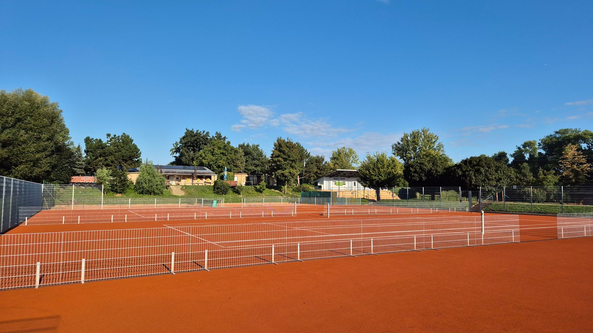
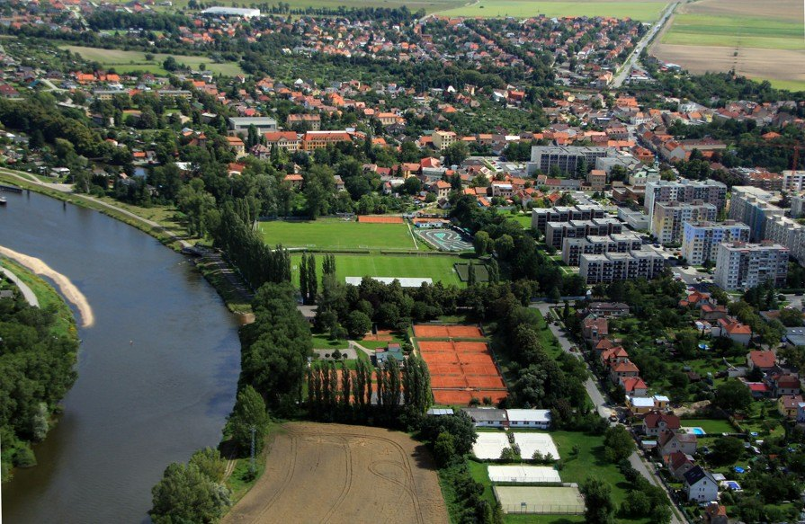
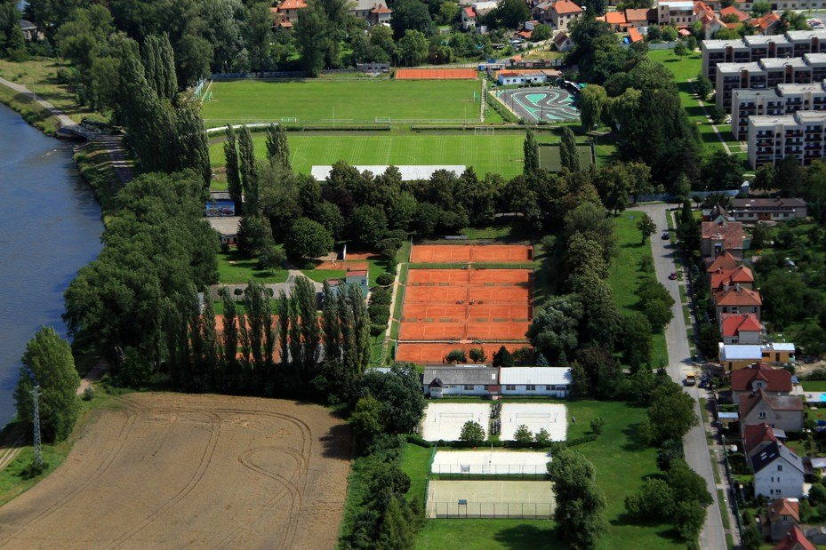

Zimní tenisová sezóna
Venkovní antuka odpočívá, akademie trénuje v hale.
Tenisový klub Čelákovice založený 6. července 1930. Šest antukových dvorců v klidném areálu, 30 minut z Prahy a s parkováním přímo v areálu.

Od založení klubu 6. července 1930 po sté výročí 6. července 2030. Jedna ryska je jeden rok, oranžově je úsek, který zbývá do stého výročí.
Do 100 let klubu zbývá
1 346dní
dnes 29. 10. 2026, výročí 6. 7. 2030
Klub byl založen 6. července 1930 jako Tenisový klub LTK 1930. Byl to prvorepublikový klub a na jeho tradici dnešní spolek navazuje.
V letech 1956–1991 existoval tenisový klub v Čelákovicích pod názvem SPARTAK Čelákovice.
Rokem 1991 skončil název Spartak. Dnešní spolek navazuje na tradici prvorepublikového klubu a hlásí se k tradicím tělovýchovné jednoty a sportu v Čelákovicích.
pokračovatelem a garantem zachování myšlenek a výsledků svých předchůdcůjak o sobě píše klub
Klub oslavil osmdesát let exhibičními zápasy a setkáním členů.

Rekonstrukce je dokončena. Podpořila ji investiční dotace Národní sportovní agentury a individuální dotace Města Čelákovice.
V březnu se bouralo staré sociální zařízení, v červnu začaly práce na dvorcích a 8. 9. 2025 už byly dvorce hotové s novými čarami.

6. července 2030 uplyne sto let od založení klubu. V roce 2030 klub oslaví 100 let.
Dvorec si zarezervujete online v systému Roger nebo telefonicky. Kurty je možné rezervovat v otevírací době Po–Ne 9:00–11:30, 16:00–22:00.
E-mail info@tkcelakovice.cz
Základ hrací jednotky je 90 minut, VII. jednotka pokračuje dál podle světla. Rozvrh se může upravit podle počasí a rezervací.
Příjemný sportovní areál v klidném prostředí v blízkosti Labe. Je snadno dostupný z Prahy (cca 30 minut) s možností parkování přímo v areálu.
Celý areál udržují členové klubu vlastními silami.



Pronájem dvorce pro nečleny
240Kč / hodina
Placeno před hrou. Nečlen musí mít dvorec rezervovaný a pronájem zaplacený předem.
| Další služby | Kč |
|---|---|
| Pronájem klubovny pro nečleny a firmy | 2 000 / den |
| Skříňka malá | 250 / rok |
| Skříňka velká | 350 / rok |
| Členské příspěvky na rok | Poznámka | Kč |
|---|---|---|
| Dospělí — celodenní hraní | 5 000 | |
| Dospělí — dopolední hraní | 2 500 | |
| Studenti, mládež do 18 let | 3 500 | |
| Děti, mládež do 15 let | 1 500 | |
| Hráči školičky do 10 let | 100 | |
| Nehrající členové — základní příspěvek | při opakované hře doplatek 1 000 Kč, každou odehranou hodinu hradí podle ceníku | 500 |
| Vstup do klubu — nové členství | zahrnuje příspěvek i brigády za první rok | 7 000 |
Brigádní hodiny. Každá odpracovaná hodina sníží příspěvek o 100 Kč, nejvýš o 1 000 Kč za 10 hodin. Mládež do 15 let brigády dělat nemusí, odečet neplatí pro nehrající členy a mládež do 15 let.
Splátky. Příspěvky lze na požádání rozložit: nejméně 50 % před hrou, zbylých 50 % do 30. 6.
Ceník platí od 1. 1. 2015, schválila ho valná hromada 13. 12. 2014.
Tenisové tréninky pro aktivní děti. Sezóna trvá od října 2026 do června 2027, přihlášky jsou online. Venku se hrálo do 16. 10., od 18. 10. 2026 se trénuje v hale podle zimního rozvrhu.
Nevratná záloha 1 500 Kč. E-mail info@tenisovaakademiecelakovice.cz
Dlouholetá extraligová hráčka TK Neride.
Závodní hráč A-týmu TK Čelákovice.
Závodní hráč A-týmu TK Čelákovice.
Závodní hráč A-týmu TK Čelákovice.
Pro hráče všech věkových kategorií, kteří mají zájem o zlepšení své tenisové hry o prázdninách. V létě 2026 byly vypsané čtyři termíny, termíny na rok 2027 zatím nejsou zveřejněné.
| Čas | pondělí až pátek | 9:00–16:00 |
| Cena za osobu | jeden den 1 200 Kč | 4 200 Kč |
| Program | výuka tenisu (technická a taktická výuka, zápasy), kondiční příprava; pod dohledem trenérů s platnou kvalifikací ČTS | |
| Kontakt | Luboš Soukup, lubossoukup@seznam.cz, 777 341 070 · leták (PDF) | |
Tenisový klub Čelákovice, spolek
Klub byl založen 6. července 1930 jako Tenisový klub LTK 1930. V letech 1956–1991 existoval pod názvem SPARTAK Čelákovice. Dnešní spolek navazuje na tradici prvorepublikového klubu.
Klub vychovává nové generace tenistů a žije sportovně‑společenským životem. Členové se pravidelně schází pro sport, pobavení, ale i proto, aby vlastními silami udržovali celý areál. Hospodaří z příspěvků členů.
Klubový turnaj členů ve čtyřhře. Vzpomínka na jednoho z nestorů čelákovického sportu, dlouholetého aktivního hráče a správce klubu, „který tenisovým klubem žil“. Klub každoročně pořádá několik turnajů, nejen pro mládež.
Venkovní antuka odpočívá, akademie trénuje v hale.
Venku se trénovalo do 16. 10., od 18. 10. akademie trénuje v hale podle nového rozvrhu.
Čtyři letní termíny: 13.–17. 7., 27.–31. 7., 3.–7. 8. a 17.–21. 8. 2026.
S podporou Národní sportovní agentury a Města Čelákovice.
Rekonstrukci dvorců a sociálního zařízení v roce 2025 podpořily investiční dotace Národní sportovní agentury a individuální dotace Města Čelákovice. Národní sportovní agentura poskytla klubu také neinvestiční dotaci „Můj klub 2026“.
Klubu finančně pomáhá Město Čelákovice „a pár dalších sponzorů, kterých si klub nesmírně váží“.


